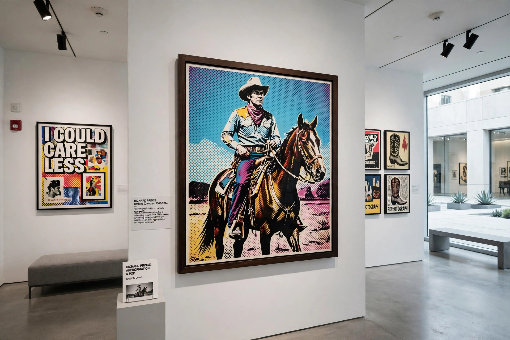

Richard Prince (born 1949) is an American painter and photographer. In the mid-1970s, Prince made drawings and ink-on-paper works that later became known as appropriation art. In 1977, he created a highly influential series of rephotographed advertisements — most famously cowboys from Marlboro cigarette ads — which helped define the Pictures Generation.

Prince's series include the Cowboys (1980–1992), Jokes (from 1985), in which cartoon jokes are painted as text on canvas, Spiritual America (1983), and the Nurse paintings (2003), based on pulp romance novel covers. His photograph Spiritual America, a rephotograph of Brooke Shields, and his later New Portraits series — enlarged screenshots of others' Instagram posts — provoked recurring debates about authorship and fair use.
In Cariou v. Prince (2013), the US Second Circuit held most of Prince's Canal Zone paintings to be fair use. Later suits over the New Portraits were largely settled or decided with mixed outcomes, keeping Prince central to legal debates on appropriation.
His works have achieved some of the highest prices for contemporary photography and painting, and he has had retrospectives at the Whitney Museum and the Guggenheim Museum, whose 2007 exhibition was titled Spiritual America.